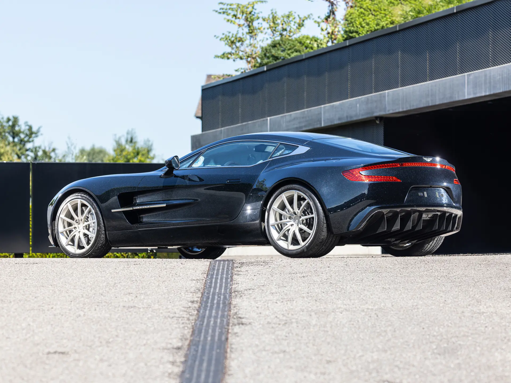
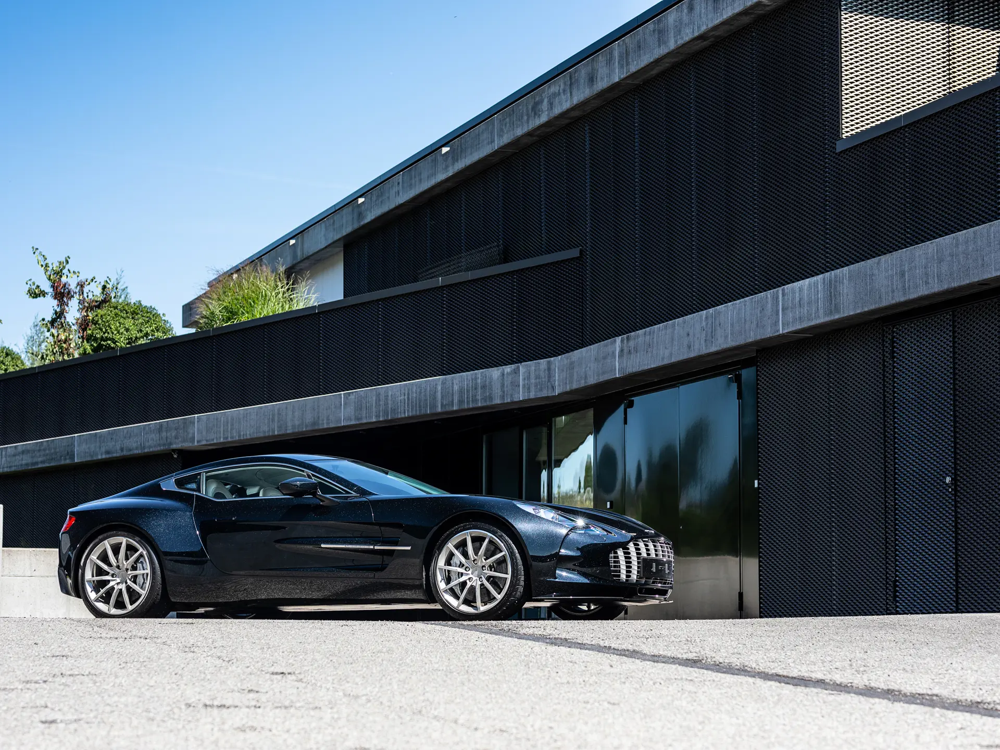

The Aston Martin One-77 marked a defining moment for the brand, the impact of which is still evident in Aston Martin’s modern lineup. It was the company’s first road car to feature a full carbon fibre chassis, and it can be seen as a direct predecessor to cars such as the Valkyrie and Valhalla.
The chassis itself was developed by Multimatic, now widely recognised for their work on high-performance platforms such as the 2017 Ford GT. Despite this advanced construction, the One-77 retained a front-mid engine layout in classic Aston Martin fashion, though in execution, it was far removed from a traditional grand tourer.

Its 7.3-litre naturally aspirated V12, heavily reworked by Cosworth, was closer in character to a racing engine than a conventional road car power unit. Combined with an unforgettable exhaust note, it propelled the One-77 to a top speed of around 220 mph, making it one of the fastest Aston Martins ever built.
While its 6-speed automated manual transmission drew some criticism, it can also be seen as part of the car’s character, particularly at higher speeds where it performs with greater intent. Visually, the One-77 is both striking and elegant, though beneath its refined surface lies a far more aggressive machine, something that becomes apparent the closer one looks.
| Engine | 7.3L Naturally Aspirated V12 |
| Power | 750bhp |
| Weight | 1630kg |
| Transmission | 6-speed Automated Manual |
| 0-62 | 3.7 s |
| Top Speed | 220mph |
| Year | 2009 |